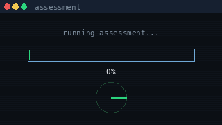
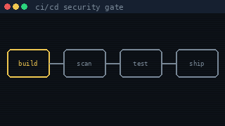
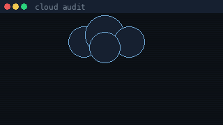

mission log

Post-deployment VAPT
Regular VAPT across 50+ web, mobile (Android and iOS), and API applications, finding and clearing 150+ vulnerabilities.

Veracode in Jenkins
Source code scanning wired into the Jenkins CI/CD pipeline for automated post-deployment scans, reducing release-blocking findings.

Terraform on GCP
Automated GCP user onboarding and custom IAM role assignment for 100+ users.

API security testing
Client API testing with Vooki, Burp Suite Pro, and Postman.
Sitecore CMS hardening
Hardened Sitecore-based ASP.NET applications and built a Python script to automate the hardening audit, saving 20+ hours per release.
Snyk for PCI-DSS
Integrated Snyk to provide PCI-DSS compliance insights.
CTF interview round
Designed a CTF-style technical interview round for hiring freshers and entry-level security candidates.